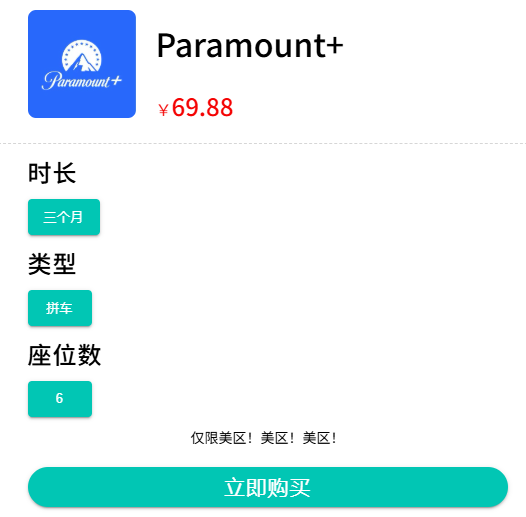

如何分享 Paramount plus？

如今，Netflix、HBO、亞馬遜、迪士尼等巨頭紛紛推出流媒體服務。作為影視行業的巨頭，派拉蒙當然也不會缺席。今天，我們就來為大家揭秘派拉蒙推出的流媒體服務Paramount+。
Paramount plus 是什麼？
在 Paramount Plus 上觀看什麼？
Paramount+ 擁有 CBS 的所有劇集，包括廣受好評的
電視劇方面，它包括派拉蒙網絡熱播劇
Paramount plus 多少錢？
Paramount plus 有 2 個級別的計劃可供你選擇：
基本套餐：每月 4.99 美元或每年 49.99 美元。 你可以觀看 Paramount Plus 上的大部分節目，但會附帶廣告 ，並且無法下載任何內容。高級版：每月 9.99 美元或每年 99.99 美元。 你可以觀看 Paramount Plus 上的所有節目，且無廣告，並可下載節目離線觀看。
如何免費獲得 Paramount plus？
幸運的是，Paramount Plus 提供
如何取消 Paramount plus？
如果觀看體驗不符合你的預期或價格太貴，你可以按照以下步驟取消訂閱。
- 在你的網絡瀏覽器中輸入www.paramountplus.com/account。
- 登錄你的 Paramount+ 帳戶。
在帳戶頁面上，滾動到
選擇
如何在 Paramount plus 上省錢？
你可以在 1 個 Paramount Plus 帳戶中創建

因此，我們可以通過與他人共享 1 個訂閱來分攤費用，從而節省 Paramount plus 的費用。
為此，賬戶所有者必須與其他用戶共享賬戶憑證，並從他人那裡收取資金。這意味著賬戶所有者需要處理許多麻煩，但可以毫無差別地享受收益。
在 環球巴士 ，無需擔心這些麻煩。因為我們會處理好所有業主的事務，你只需每月支付 23.3 元（季付69.88 元） 即可安心享受觀看！
